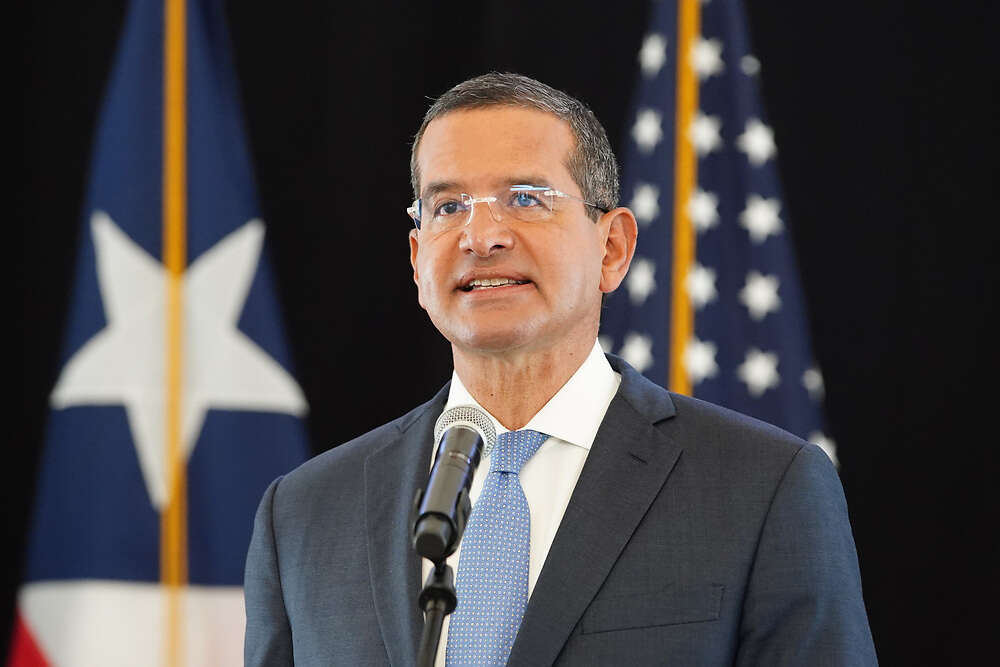

Domingo Emanuelli
El licenciado Domingo Emanuelli Hernández es un destacado abogado con amplia experiencia en litigio corporativo, comercial y civil. Se graduó Magna Cum Laude en Estudio Generales de la Universidad de Puerto Rico y un Juris Doctor Cum Laude de la Escuela de Derecho de la UPR. Comenzó su exitosa carrera en un reconocido bufete en Arecibo. El licenciado Emanuelli cuenta con experiencia en casos de naturaleza criminal y ha mantenido una práctica por más de 43 años.

Pedro Pierluisi
Pedro Rafael Pierluisi Urrutia es un abogado y político puertorriqueño, quien es el 14.° gobernador de Puerto Rico desde el 2 de enero de 2021. Miembro del Partido Nuevo Progresista y del Partido Demócrata de los Estados Unidos